Room operation up to V5.1
Each room is represented as a graphic and displays the components depending on the application used:
- HVAC application
- Lighting
- Blinds
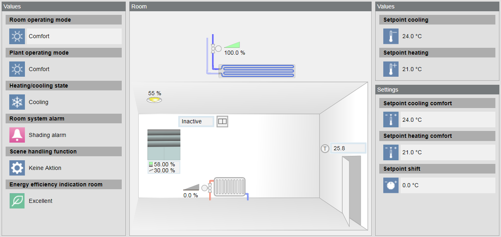
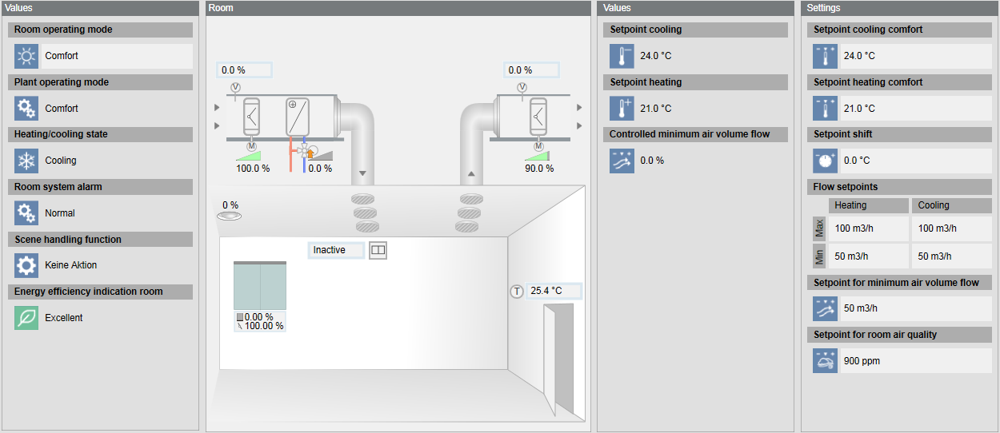
Prerequisites:
- The system browser is in Operating mode.
Selecting Room
|
Views to the Rooms | |
View in System Browser | Floor Plan View |
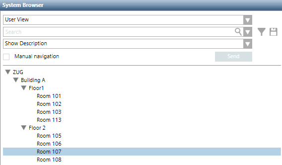 | 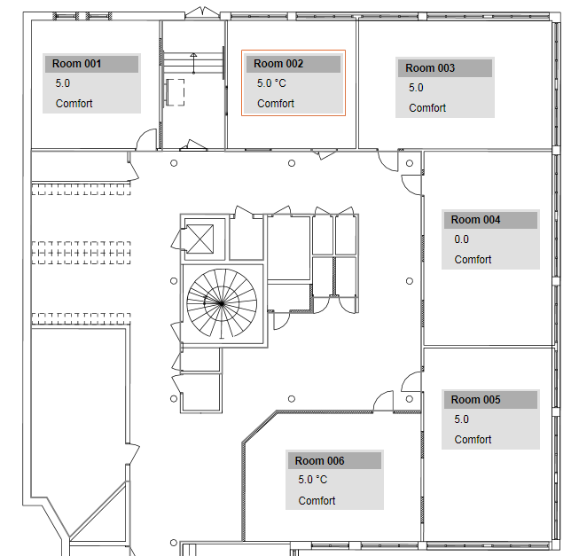 |
- In the System Browser or Floor Plan View, select the room to operate.
- The room graphic opens and displays the most important values in the Operation tab.
NOTE: Do not make changes in the dialog boxes. - Perform one the following procedures as needed.
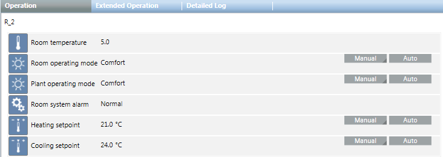
Changing Operating Mode
- The room is selected and the room graphic displays.
- The present priority property allows you to write a command (see Note).
- Select Values > Room operating mode.
- Click the Operation tab and select the Value property.
- Click Manual.
- In the Value drop-down list, select the Operating mode.
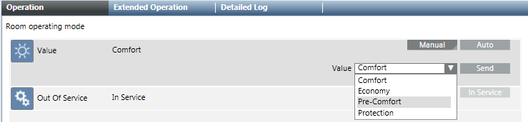
- Click Send.
- The message
Manual successfulis displayed. - In the Extended Operation tab, the Present Priority and Priority Matrix changes to 8 or 13.
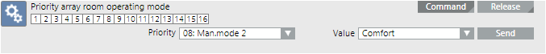

NOTE:
Successful operation only possible if you can write at a higher priority than is displayed on the status bar for the Priority Matrix. You can, for example, overwrite at the present priority 13 at 8, but not 7.
The display arrow indicates an active priority of 1 to 8. At priority 8, you can change the operating mode, for example, Protection to Pre-Comfort.
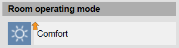
Changing Setpoints
- The room is selected and the room graphic displays.
- You can write a command at the Priority Matrix (see NOTE).
- Select Settings > Setpoint heating comfort or Setpoint cooling comfort.
- In the Operation tab, select the Value property.
- Click Manual.
- Complete the Value field.
- Click Send.
- The message
Command successfulappears. - In the Extended Operation tab, the Priority Matrix changes to 13.
NOTE:
Successful operation only possible if you can write at a higher priority than is displayed on the status bar for the Priority Matrix. You can, for example, overwrite present priority 13 with priority 8.
Switching Lights On and Off
- The room is selected and the room graphic displays.
- Select the object lighting
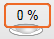
and object value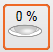
. - In the Operation tab, select the Value property.
- Click Manual.
- Complete the Value field or use a sliding controller.
- Click Send.
- The message
Command successfulappears. - The light objects displays in yellow.
- In the Extended Operation tab, the Priority Matrix changes to 13.
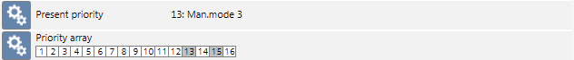
NOTE:
Successful operation only possible if you can write at a higher priority than is displayed on the status bar for the Priority Matrix. You can, for example, overwrite present priority 13 with priority 8.
Releasing Manual Operation
- The room is selected and the room graphic displays.
- Select one or more settings to enable manual operation:
- Values > Room operating mode
- Settings > Setpoint cooling comfort
- Settings > Setpoint heating comfort
- Settings > Setpoint shift
- In the Operation tab, select the Value property.
- Click Auto.
- In the Extended Operation tab, the Priority Matrix changes to 13.
- Click Send.
- The message
Auto successfulis displayed. - The room operates in automatic mode if not an other manual operating state is active.
Enabling Manual Operating at a Higher Priority
A trained user can overwrite the present operation at priority 13 using a higher priority 8.
- The room is selected and the room graphic displays.
- Select one or more settings to enable manual operation:
- Values > Room operating mode
- Settings > Setpoint cooling comfort
- Settings > Setpoint heating comfort
- Settings > Setpoint shift
- In the Extended Operation tab, select the Priority matrix property.
- Click Command.
- In the Priority drop-down list, select the desired priority.
- Click Send.
- The message
Command successfulis displayed.
Positioning Blinds
- The room is selected and the room graphic displays.
- Select the Blinds
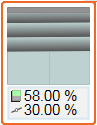
object and Value object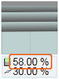
. - Click the Operation tab.
- The properties of the blind displays.
Positioning Height
- Select the Height property and click Manual.
- Complete the Value field or use a sliding controller.
- Click Send.
- The message
Manual successfulis displayed. - The blind object displays in a dynamic status.
- Present priority and Priority Matrix are set to 13.
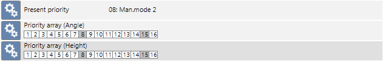
Positioning Angle
- Select the Angle value property and click Command.
- Complete the Value field or use a sliding controller.
- Click Send.
- The message
Manual successfulis displayed. - The blind object displays in a dynamic status.
- Present priority and Priority Matrix are set to 13.
NOTE:
Successful operation only possible if you can write at a higher priority than is displayed on the status bar for the Priority Matrix. You can, for example, overwrite present priority 13 with priority 8.